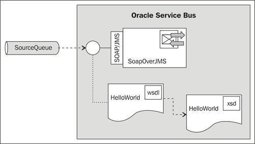
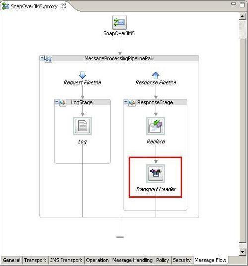
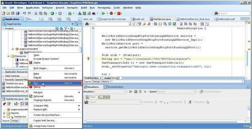
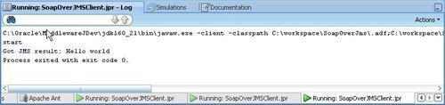

In this recipe, we will implement reliable SOAP communication over JMS and not over HTTP. The only difference is that your request and response will be published on a queue. This way the request can't be lost (when it has JMS persistence with XA/QoS). The response will also be published on the queue and the client can consume this response.
For this recipe, we will use an OSB project with a proxy service that is based on a WSDL with a synchronous request/response operation. The SOAP message will be sent over JMS instead of HTTP. JDeveloper will be used to generate a test client:

You can import the OSB project into Eclipse OEPE from \chapter-10\getting-ready\sending-soap-over-jms.
First we will need to change the proxy service to use the JMS instead of the HTTP transport. In Eclipse OEPE, perform the following steps:
jms://[OSBServer]:[Port]/weblogic.jms.XAConnectionFactory/SourceQueue
_wls_mimehdrContent_Type into the field. text/xml; charset=utf-8 into the Expression field and click on OK.Now let's test the service by implementing a simple Java client in JDeveloper. First we need to retrieve the WSDL of the OSB proxy service from the OSB server. In the Service Bus console, perform the following steps for saving the WSDL into a file:
sending-soap-over-jms project. proxy folder on the right. SoapOverJMS_wsdl.jar to a temporary folder.In JDeveloper, perform the following steps:
Generic into the search field, select Generic Application, and click on OK. SoapOverJms into the Application Name field and click on Next. SoapOverJMSClient into the Project Name field and click on Finish. ant in the search field, select Empty Buildfile (Ant), and click on OK.<project default="clientOSB"> <path id="http://weblogic"> <pathelement path="C:/oracle/MiddlewareJdev11gR1PS4/wlserver_10.3/server/lib/weblogic.jar" /> </path> <taskdef name="clientgen" classname="http://weblogic.wsee.tools.anttasks.ClientGenTask" classpathref="http://weblogic"/> <target name="clientOSB"> <clientgen wsdl="file:Helloworld.wsdl" destdir="src" packagename="osb.book.soap.jms" type="JAXRPC"/> <javac srcdir="src" destdir="classes" includes="osb.book.soap.jms/**/*.java"/> </target> </project>
weblogic.jar so it matches with your environment. SoapOverJMS_wsdl.jar file that we just created and extract the Helloworld.wsdl and Helloworld.xsd into the project folder. java class into the search field, select Java Class, and click on OK. TestService into the Name field, enable the Main Method checkbox, and click on OK. TestService Java class:import java.net.URISyntaxException; import java.rmi.RemoteException; import javax.xml.rpc.ServiceException; import javax.xml.rpc.Stub; import osb.book.soap.jms.HelloWorldService; import osb.book.soap.jms.HelloWorldServiceSoapHttpPortBindingQSService; import osb.book.soap.jms.HelloWorldServiceSoapHttpPortBindingQSService_Impl; import weblogic.wsee.connection.transport.jms.JmsTransportInfo;
Replace the main method by the following code:
public static void main(String[] args) throws ServiceException,
URISyntaxException,
RemoteException {
HelloWorldServiceSoapHttpPortBindingQSService service =
new HelloWorldServiceSoapHttpPortBindingQSService_Impl();
HelloWorldService port =
service.getHelloWorldServiceSoapHttpPortBindingQSPort();
Stub stub = (Stub)port;
String uri = "jms://[OSBServer]:[Port]?URI=SourceQueue";
JmsTransportInfo ti = new JmsTransportInfo(uri);
stub._setProperty("http://weblogic.wsee.connection.transportinfo" , ti);
try {
String result = null;
System.out.println("start");
result = port.sayHello();
System.out.println("Got JMS result: " + result);
} catch (RemoteException e) {
e.printStackTrace();
}
}
[OSBServer] and [Port] with the settings of the OSB server installation.Now let's test the Java class.
TestService.java class and select Run:

SOAP over JMS works in the same manner as HTTP, but JMS will be more reliable. The JAX-RPC client in JDeveloper generates a request and puts it in a WebLogic queue. The proxy service consumes the request from the queue and executes the normal message flow. The proxy service publishes the response that is also on the queue and uses the value of the JMSMessagId property of the request as the JMSCorrelationId. The client listens on the queue for the response message with this JMSCorrelationId.
SOAP over JMS has the following disadvantages: